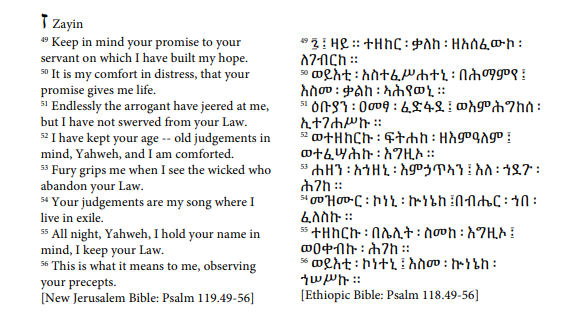
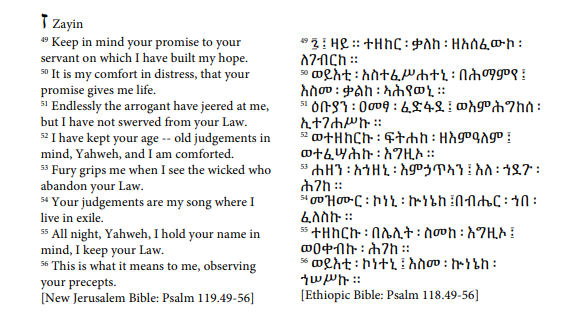

የዛይ ታሪክ እና የቃል ወጎች ብዙውን ጊዜ በኢትዮጵያ ውስጥ ካሉ በጣም ትላልቅ ክስተቶች ጋር የተቆራኙ ናቸው ፡፡ እነሱ የኢትዮጵያ ኦርቶዶክስ ቤተክርስቲያን ፣ የኢትዮጵያ መንግስት ፣ እንዲሁም የአክስኩም እና የጉራጌ ህዝብ ታሪክ አካል ናቸው ፡፡ እንደምናየው ፣ በሴይ ታሪክ እና በታላቋ ኢትዮጵያ ታሪክ መካከል ባሉ ግንኙነቶች ፤ ከሙስሊም ወረራ አንስቶ እስከ ሚኒሊክ ወረራ ድረስ እና በአክሱም ያሉ አብያተ ክርስቲያናት ከመጥፋታቸው አንስቶ እስከ አሁን የያዙት የዝዋይ ሐይቅ ደሴቶች ድረስ መሸሸጊያ በሚፈልጉ ክርስቲያኖች ይመሰረታሉ ፡፡ የ Zway ሐይቅ እና በዚያ የሚኖር የክርስቲያን ህዝብ ማጣቀሻዎች በብዙ ነጉሳን ዜና መዋዕል ፣ ተጓዦች ተረቶች ፣ መጽሔቶች እና የቃል ወጎች ውስጥ ይገኛሉ ፡፡ እነዚህ ምንጮች የተዛባ እና አልፎ አልፎም ለትውልዶች በተተላለፉ ታሪካዊ ወጎች ላይ ብርሃን እንድንፈጽም ይረዱናል ፡፡ ብዙ ምንጮች በደሴቶቹ ላይ የሚኖሩትን ሰዎችን እንደማያስታውሱ ፣ ግን በዋናነት እንደ ጦርነት ፣ ወረራ እና ወረራ ካሉ ደሴቶች ጋር የሚዛመዱ ውጫዊ ታሪኮችን እና ክስተቶችን የሚመለከቱ ታሪካዊ መዝገብ ለአንባቢው ጥሩ አይደለም ፡፡ ሆኖም ከታሪካዊው ክስተቶች እና ምንጮች ጋር ተያያዥነት ያላቸው የተለያዩ የቃል ወጎች አሉን ፡፡ ይህ ማለት የቃል ባህሎች ታሪካዊ እውነቶች ናቸው ማለት አይደለም ፣ እናም እንደነሱ መተንተን የለብንም ፡፡ ከዚያ ይልቅ ፣ እነዚህ የቃል ባህሎች ለማብራራት እና ለማጉላት በሚፈልጉት ግንኙነቶች እና ግንኙነቶች ላይ በማተኮር ዘመናዊ መነፅር በጥልቀት መመርመር አለብን ፡፡ እነዚህን ግንዛቤዎች በአእምሯችን ይዘን ወደ ታሪክ እንመለስና የአሁኑን ክስተቶች ፣ መረዳቶች እና ግንኙነቶች እንዴት እንደቀየረ እንይ ፡፡ ይህ ምዕራፍ የታሪካዊውን የጊዜ ሰሌዳ እንደገና ለማደስ ለማገዝ ሁሉንም የጽሑፍ ምንጮችን እና ተጓዳኝ የቃል ወጎችን በ Zway ሐይቅ እና ዚይ ውስጥ አንድ ላይ ማሰባሰብ ነው ፡፡ የጊዜ መስመሩ አልፎ አልፎ ጥቂት መቶ ዓመታት ሊዘል ይችላል ፣ እና የተወሰኑት ምንጮች አፈ ታሪኮች እና በተጋነኑ የታሪክ ዘገባዎች ላይ የተመሰረቱ ናቸው ፣ ሆኖም ፣ ከዚይ ታሪካዊ ባህሎች ጋር የተዛመዱ ግንኙነቶችን እና ግንኙነቶችን ለመግለጥ እና በሚቀጥለው ምዕራፍ ላይ የተወያዩ የዚይ ማንነት መሰረቶችን መሠረት ለመጣል ይረዳል ፡፡ የቃል ወጎች አልፎ አልፎ እዚህ ላይ ይቀርባሉ ፡፡ ዓላማዎቹ ለእነዚህ የዚይ የቃል ባህሪዎች ያለ ማጣሪያ ታላቅ ድምጽ መስጠት እና ለቀጣይ ትንተና እውቅና መስጠት ናቸው ፡፡ ምእራፉ እንደሚከተለው ቀርቧል-በመጀመሪያ ፣ በ “ዚይ ሥነ-አዕምሮ” ላይ የተደረገ ውይይት ሁለተኛ ፣ የዛዋ ሀይቅ እና ደሴቶቹ አጠቃላይ እይታ ተሰጥቷል ፡፡ ሦስተኛ ፣ የayይ አመጣጥ ቀጥሎ ፣ አራተኛ ፣ ወደ ዙር ሐይቅ የሚደረገው አራት የማዕበል ሞገድ ተብራርቷል ፡፡
ההיסטוריה והמסורות האוראליות של ה- Zay קשורות לרוב באירועים גדולים בהרבה באתיופיה. הם חלק מההיסטוריה של הכנסייה האתיופית האתיופית, המדינה האתיופית, כמו גם תולדות העמים האקסומיטים והגוראז '. כפי שנראה, מערכות היחסים בין תולדות זיי להיסטוריה של אתיופיה הגדולה נעים בין פלישות מוסלמיות לכיבושי מנילק השני ועד חורבן כנסיות באקסום ועד קיסרים ונוצרים המחפשים מקלט באיי אגם זווי. אזכורים לאגם זווי ולאוכלוסייה נוצרית המתגוררת בה ניתן למצוא בכרוניקות רויאל שונים, סיפורי מטיילים, כתבי עת ומסורות בעל פה. מקורות אלה עוזרים לנו לשפוך אור על המסורות ההיסטוריות הלא תואמות ולעיתים סותרות שהועברו במשך דורות. התיעוד ההיסטורי לא היה חביב לחוקר כאן, מכיוון שמקורות רבים אינם זוכרים את האנשים החיים באיים, אלא עוסקים בעיקר בהיסטוריה חיצונית ובאירועים הקשורים לאיים, כמו מלחמות, כיבושים וכיבושים. עם זאת, יש לנו מסורות בעל-פה שונות המתאימות לאירועים ולמקורות ההיסטוריים. אין זה אומר שהמסורות בעל פה הן אמיתות היסטוריות, ואסור לנו לנתח אותן ככאלה. במקום זאת, עלינו להעריך באופן ביקורתי מסורות בעל פה דרך עדשה מודרנית המתמקדת בקשרים וביחסים שמסורות בעל-פה אלה מבקשים להסביר ולהדגיש. בהתחשב בהבנות אלה, אנו יכולים לפנות להיסטוריה ולראות כיצד היא עיצבה את האירועים, ההבנות והיחסים הנוכחיים. פרק זה נועד להפגיש את כל המקורות הכתובים והמסורות בעל-פה המקבילות באגם זווי והזיי בניסיון לשחזר את ציר הזמן ההיסטורי. ציר הזמן עשוי מדי פעם לקפוץ כמה מאות שנים, וחלק מהמקורות מבוססים על אגדות וכרוניקות מוגזמות; עם זאת, זה יעזור בכל זאת לחשוף את הקשרים והיחסים הקשורים למסורות ההיסטוריות של זיי ולהניח בסיס שממנו נבנים זהויות ה- Zay - שנדונו בפרק הבא. מסורות בעל פה מוצגות, מדי פעם, באריכות; הכוונות הן לתת קול גדול יותר למסורות שבעל-פה אלה ללא פילטר ולהעניק אמינות לניתוח שלאחר מכן. הפרק מוצג כדלקמן: ראשית, דיון באטימולוגיה של "זיי". שנית, סקירה של אגם זווי ואיייה ניתנת. שלישית, נדון במקורותיו של זיי ואחריו, הרביעי, ארבעת גלי הנדידה לאגם זווי.
.jpg)
.jpg)
.jpg)
49 ፯ ፤ ዛይ ። ተዘከር ፡ ቃለከ ፡ ዘአሰፈውኮ ፡ ለገብርከ ። 50 ወይእቲ ፡ አስተፈሥሐተኒ ፡ በሕማምየ ፤ እስመ ፡ ቃልከ ፡ ኣሕየወኒ ። 51 ዕቡያን ፡ ዐመፃ ፡ ፈድፋደ ፤ ወእምሕግከሰ ፡ ኢተገሐሥኩ ። 52 ወተዘከርኩ ፡ ፍትሐከ ፡ ዘእምዓለም ፤ ወተፈሣሕኩ ፡ እግዚኦ ። 53 ሐዘን ፡ አኀዘኒ ፡ እምኃጥኣን ፤ እለ ፡ ኀደጉ ፡ ሕገከ ። 54 መዝሙር ፡ ኮነኒ ፡ ኵነኔከ ፤በብሔር ፡ ኀበ ፡ ፈለስኩ ። 55 ተዘከርኩ ፡ በሌሊት ፡ ስመከ ፡ እግዚኦ ፤ ወዐቀብኩ ፡ ሕገከ ። 56 ወይእቲ ፡ ኮነተኒ ፤ እስመ ፡ ኵነኔከ ፡ ኀሠሥኩ ። [Ethiopic Bible: Psalm 118.49-56]
«[Lake Zway] is known as Amist Deber Zay . . . Amist is five, Deber is mountain, and Zay is God. Amist Deber Zay, when we translate it, you see, Deber is a Ge’ez word, it means “mountain” or “church,” a church built on a mountain. So Amist Deber Zay means a church built on the five mountains of Zay [God]. So . . . Amist Deber Zay, in a sense, is the church of God built on a mountain. The five islands are the five mountains. The people are known as y Zay Debra Wold or y Zay Wold, which means they are the community of that church, the children of the church.» [Informant #1 2011]
Arm Of the Lord
Keep in mind your promise to your
servant on which I have built my hope
Your judgements are my song
where I live in exile
ከአዲስ አበባ በስተደቡብ ወደ ሐዋሳ በሚወስደው መንገድ 163 ኪ.ሜ በምስራቅ ሸዋ ሃገረ ስብከት ወይም ከአዲስ አበባ በስተደቡብ
በአርሲ ሃገረ ስብከት የሚገኝ
ሐይቅ ነው የዝዋይ ሐይቅ ፡፡ በውስጡም ልክ እንደ ጣና ሐይቅ ሕያው ዘለዓለማዊ ታሪኮቹን አቅፎ የያዘ: በአምስቱ ደሴቶች የሚገኙ
ታሪካዊ ገዳማት ያሉት ነው፡፡
እነዚህም:-
1- ደብረ ገሊላ ( የካህናተ ሰማይ ቤ/ክ የሚገኝበት)
2- ደብረ ሲና ( የእመቤታችን ቤ/ክ የመገኝበት )
3- ደብረ ጽዮን/ቱሉ ጉዱ (የእመቤታች የጽዮን ቤ/ክ ያለበት
4- አይሱት /ጠዴቻ (የአብርሃም ቤተመቅደስ የሚገኝበት)
5- ፋማት /ፉንድሮ ( አርባዕቱ እንስሳ ቤተመቅደስየሚገኝበት ) ደሴቶች ናቸው፡፡
ሁለቱ ማለትም ደብረ ገሊላና ደብረ ሲና በምስራቅ ሸዋ ሃገረ ስብከት ስር ሲገኙ ሦስቱ ደግሞ በአርሲ ሃገረ ስብከት ሥር ይገኛሉ፡፡
ዓረብ ፋቂህ የተሰኘ ፀሀፊ በግራኝ አህመድ መስፋፋት ጊዜ በእያንዳንዱ ደሴቶች ሦስት ሦስት አብያተክርስቲያናት እንደነበሩ በታሪክ
ጽፏል፡፡ ይህንን ታሪክ አጉልቶ
የሚያሳይልን ዋቢ ለመጥቀስም በታላቁ ደብረ ጽዮን ደሴት ሦስት አብያተክርስቲያናት ማለትም የኢየሱስክርስቶስ ቤተክርስቲያን የአቡነ ገብረ
መንፈስቅዱስ
ቤተክርስቲያን ከታቦተ ጽዮን ቤተክርስቲያን ጋር እንደነበሩ አባቶች ማረጋገጣቸው ነው፡፡
ትልቁ ደሴት ደብረ ጽዮን 40 ሄክታር ስፋት ሲኖረው ጠዴቻና ፉንድሮ በጋራ 20 ሄክታር ይሰፈራሉ። በተመሳሳይ ደብረ ገሊላና ደብረ ሲና
20 ሄክታር ስፋት
አላቸው፡፡
በሌላ በኩል ዮዲት ጉዲት አክሱምን በወረረች ጊዜ ካህናቱና ምዕመናኑ ታቦተ ጽዮንን ይዘው 40 ዓመት በደሴቶቹ ቆይተዋል። ከጥፋት ዘመን
በኀላም የተወሰኑት ታቦተ
ጽዮንን ይዘው ወደ አክሱም ሲመለሱ የተወሰኑት ደግሞ በአምስቱም ደሴቶች ቆይተዋል፡፡ እነዚህም "ላ ዛዮች" በመባል ይታወቃሉ፡፡
ቋንቋቸውም ዛይኛ ሲሰኝ ከሴማዊ
ቋንቋ የሚመደብ ነው፡፡ ማህበረሰቡ ዛሬ ላይ ከሌሎች የአካባቢው ማህበረሰቦች በቋንቋ: ባህልና ትውፊት የተሳሰረና ከደሴቶቹ ውጭም
ተዋልዶ የሚገኝ ጥንታዊ
ማህበረሰብ ነው።
በአፄ አምደ ጽዮን ዘመነ መንግስት (ከ1307- 1336) ብዙ አባቶች ወደዚህ ተሰደው ነበር፡፡ በዚህ አካባቢም በስፋት ወንጌልን
በማስተማርና በደሴቶች
በመዘዋወር ወደዚህ ቦታ ከመጡ አባቶች ( አቡነ አኖሬዎስ ፡ አቡነ በጸሎተ ሚካኤል ) ገድለ አቡነ ፊልጶስ " ወሶቤሃ አዘዘ ንጉሥ
ይሰድዎ ለብጹዐ እም ታእካሁ
ወያንብርዎ ማዕከለ ደሴት ዘሀለወት ውስተ ባሕረ ዝዋይ " ይላል ይህም በአካባቢው ተዳክሞ የነበረውን ክርስትና እንዲጠነክር
አድርጎታል፡፡
የዝዋይ ሐይቅ ከታቦተ ጽዮን መምጣት ጋር ተያይዞ የመጡና በተለያዩ ዘመናት የተሰባሰቡ የመጻሕፍትና የንዋዬ ቅድሳት ማዕከል ነው ፡፡
በዓለም ላይ ጠፍቶ ከነበረው
ከመጽሐፈ ኄኖክ ጀምሮ በርካታ የሃገርና የቤተክርስቲያንን ታሪክ አቅፎ የያዘ ታላቅ ምስጢራዊ ደሴቶች የታደለ ነው፡፡ በአሁኑ ጊዜ
የሚገኙ አብዛኞቹ መጻሕፍት
የአፄ ዳዊትን ስም የያዙ ናቸው ይህ ማለት አብዛኛው በእሳቸው የተበረከቱ ናቸው ማለት ነው፡፡
የዝዋይ ደሴት የነገስታት የወግ እቃ ማካማቻ ስለነበሩ በግራኝ አሕመድ ግዜ ቦታውን ለመውረር አንድ አሳሽ ቡድን ወደ ደሴት ይላካል፡፡
ነገር ግን መረጃውን የሰሙ
ብዙ መነኮሳት በርካታ ንዋያተ ቅድሳትንና ውድ ቅርሶችን ደብቀው ስለነበረ አሳሾች ብዙ ሃብት የለውም በማለት ሪፖርት አድርገዋል፡፡
የግራኝም ጦርም ወደ ሐድያ
አቀና፡፡
በአፄ ዘድንግ ዘመነ መንግሥት (1596- 1597) የልጅ ልጃቸው በችግር ምክንያት ተሰዳ ዝዋይ ደሴቶች ገብታ ነበር፡፡ ቀደም ብሎ
አባት ንጉሥ ሳሕለ ስላሴ:
ኋላም ልጅ ዳግማዊ አፄ ምኒሊክ በ1888 ዓ.ም ቦታውን ጎብኝተውታል፡፡ የዓፄ ሀይለ ስላሴ አባት ልዑል ራስ መኮነን የቁልቢ
ቤተክርስቲያንን እንዲሰሩ ምክንያት
የሆናቸው በዝዋይ ያገኙት መጽሐፈ ቀሌምንጦስ ነው፡፡
በዚህም
☞የቁልቢ ገብርኤል - አጎልቻ ቅ/ጊዮርጊስ
☞ናዝሬት መድኃኒዓለም - ቦጬሳ ቅ/ሚካኤል
☞አለምጤና መድኃኒዓለም ሊቆረቆሩ በቁ።
እውነተኛ ታሪክ ማወቅ ያሻግራል... ታሪኩ የጋራችን ነውና።
@ ፈለገ ጎርጎርዮስ
.jpg)
asnaf is a pharamacist living in US
see profile
asnaf is a pharamacist living in US
see profile
asnaf is a pharamacist living in US
see profile
asnaf is a pharamacist living in US
see profile
asnaf is a pharamacist living in US
see profile
asnaf is a pharamacist living in US
see profile
asnaf is a pharamacist living in US
see profile
asnaf is a pharamacist living in US
see profile
asnaf is a pharamacist living in US
see profile.jpg)
+251911061269
nkeffeni@yahoo.com
4 killo ,Addis Ababa
Ethiopia